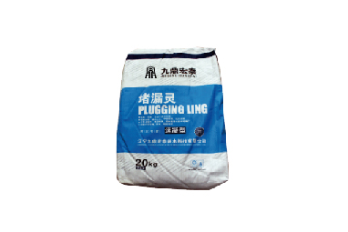

当前位置：
当前位置：
产品概述
DPL堵漏灵是一种防水、防潮、堵漏材料。它既能高效防潮、防渗、堵漏，又能与多种材料粘结。该材料分为缓凝型和速凝型两种，均为单组分灰色粉料。缓凝型主要用于防潮、抗渗；速凝型主要用于抗渗、堵漏。
产品图片

产品特性
● 速凝型可带水堵漏；缓凝型可抗渗、防水、防潮。
● 操作方便，迎水面或背水面均可达到永久效果。
● 无毒、无害、无污染、可用于生活用水工程。
● 抗漏压高、耐水性好、防水抗渗。
● 不老化、属无机材料，可与建筑物同寿命。
● 结性能好可实现堵漏防水与装饰一次完成。
执行标准
GB23440-2009无机防水堵漏材料
| 序号 | 项目 | 缓凝型（I型） | 速凝型（II型） | |
|---|---|---|---|---|
| 1 | 凝结时间 | 初凝/min | ≥10 | ≤5 |
| 终凝/min | ≤360 | ≤10 | ||
| 2 | 抗压强度/MPa | 1h | - | ≥4.5 |
| 3d | ≥13.0 | ≥15.0 | ||
| 3 | 抗折强度/ MPa | 1h | - | ≥1.5 |
| 3d | ≥3.0 | ≥4.0 | ||
| 4 | 涂层抗渗压力/ MPa（7d） | ≥0.4 | - | |
| 试件抗渗压力/ MPa（7d） | ≥1.5 | |||
| 5 | 粘结强度/ MPa（7d） | ≥0.6 | ||
| 6 | 耐热性（100℃，5h） | 无开裂、起皮、脱落 | ||
| 7 | 冻融循环（20次） | 无开裂、起皮、脱落 | ||
应用领域
适用于建筑工程及土木工程防水、抗渗、堵漏用无机防水堵漏。卫生间、厨房地面、墙面的防潮、防渗、防水。屋面、地下室的大面积抗渗防水。隧道、涵洞、水池的抗渗防水。